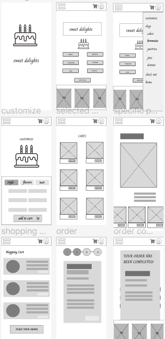
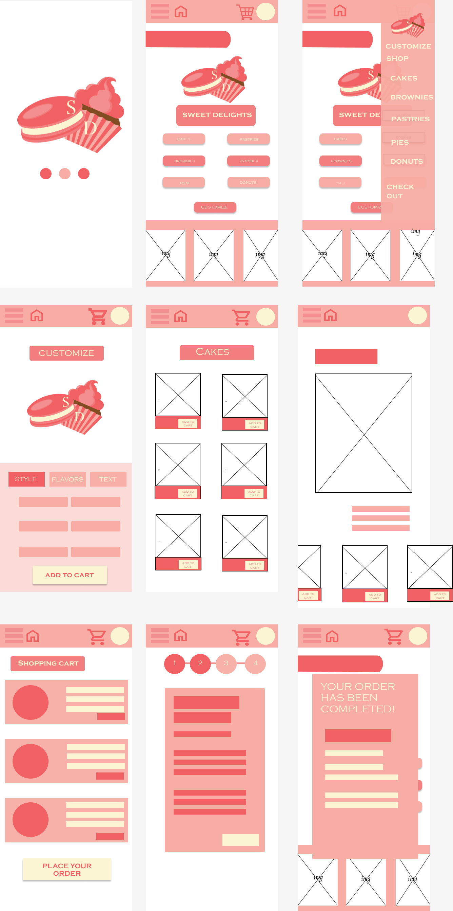

Throughout the past two weeks, I learned valuable information about UX design through various projects. I created a low fidelity design of a fancy bakery app which had a simple representation of what the app would look like. While the app was not completely finished with colors and details, users can interact with it by clicking on buttons. Using this low fidelity design, I learned about conducting research and studies. I learned multifarious ways of user research and testing including unmoderated and moderated testing. Additionally, I learned how to use this research to establish conclusions from data and present this to stakeholders and a UX team.

Through the past 2 weeks, I learned how to modify my wireframe to resemble a more realistic version of the product. I learned how to apply graphic design principles and hiearchies to compel users to select certain objects. I implemented a color palette within my prototype and created a logo on Adobe Illustrator that highlighted what I wanted the company to represent. Additionally, the units went over how to take design critiques and learn how to use feedback into my designs.
